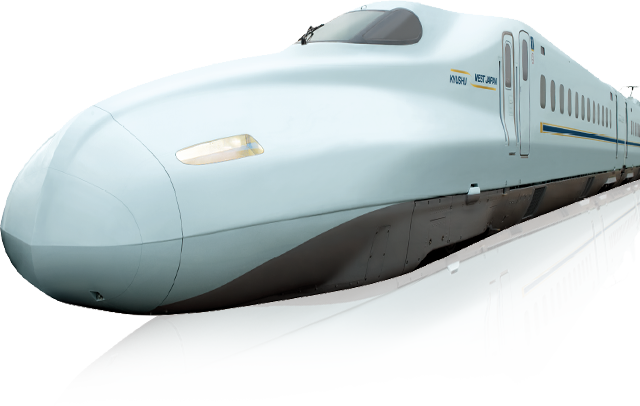

JR西日本
新幹線の種類
-
山陽・九州新幹線
みずほ・さくら・ひかり・こだま・つばめ
最新かつ高い信頼性を有したN700系車両をベースに8両化し、 九州新幹線区間の急配(35%)に対応するために全電動車化。 ボディーカラーに、伝統的な陶磁器の青磁を思わせる「白藍（しらあい） 色」を使用することで、洗練された美しさを表現。 側面ラインに、ボディー カラーとの対比により引き締まったイメージとなる「濃藍（こいあい）色」 を使用することで、美しさの中にも力強さとスピード感を表現。冷器の時 絵に使われる「金色」のラインを重ねることにより、品格とプレミアム感を演出。
 -
東海道・山陽新幹線
のぞみ・ひかり・こだま
日本の大動脈を疾走する現在の主力「N700系新幹線」。 700系新幹線がもっていた高いポテンシャルをベースに、最速性、快適性、環境性、 省エネルギー性などを大きくグレードアップさせたのが「N700系新幹線」です。 ビジネス、ご旅行など、多様なアクティビティに対応するために車両設備が大幅に充実。 さらに、お客様一人一人に快適におくつろぎいただけますよう、最新テクノロジーを搭載して、 上質な乗り心地と車内環境を実現しています。

-
北陸新幹線
かがやき・はくたか・つるぎ
新しい新幹線車両で表現したのは、「和の未来」。 日本の伝統文化を形作る「和」のエッセンスを散りばめ未来を拓く新幹線を創りました。 新しく美しいスタイルの「W7系」が、いよいよ日本を、北隆を、疾駆します。